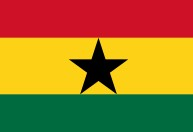

About Me
My name is Jackson Osei Kumi. I am from Ghana and have recently completed professional training in Data Analytics. Currently, I am studying Web and Computer Programming at BYU-Idaho. I am passionate about web development and data analysis, and I enjoy learning new technologies to solve real-world problems.
About My Country - Ghana

Ghana is a country located in West Africa, known for its rich history, diverse cultures, and beautiful landscapes. It was the first African country to gain independence from colonial rule in 1957. Ghana is also famous for its vibrant traditions, music, festivals, and delicious cuisine. The country is a democratic republic with a growing economy and a welcoming environment for tourists and businesses alike.